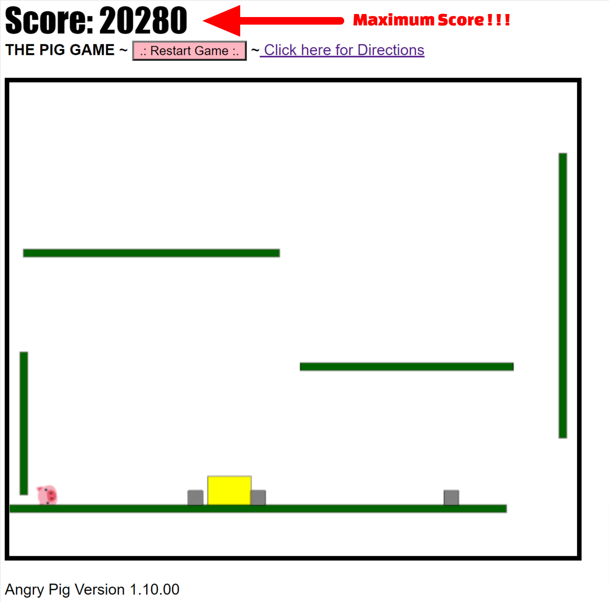

The Pig Game ~ Directions
Directions: Your Pig World will drop into place at the beginning of the game.
.: Press the Spacebar to launch your Pig. It will go at a slightly random angle and speed
ONLY to the right. You can press Space at ANY point as many times as you like.
.: Your goal is to contact as many of the brown and thick blue blocks as you can
and eliminate them from the screen. There is one bonus small stone square as well.
.: You gain points for each block you contact.
.: If you push anything out the bottom hole you get no points for eliminating that block.
.: If your Pig flies off the screen the game is over. Maximum score is: 20,280 pts
.: To restart the game Click the .: Restart Game :. Button, press F5, refresh your browser,
or use a keyboard shortcut
such as CTRL + R for PC or CMD + Shift + R for Mac.

Version 1.10.00